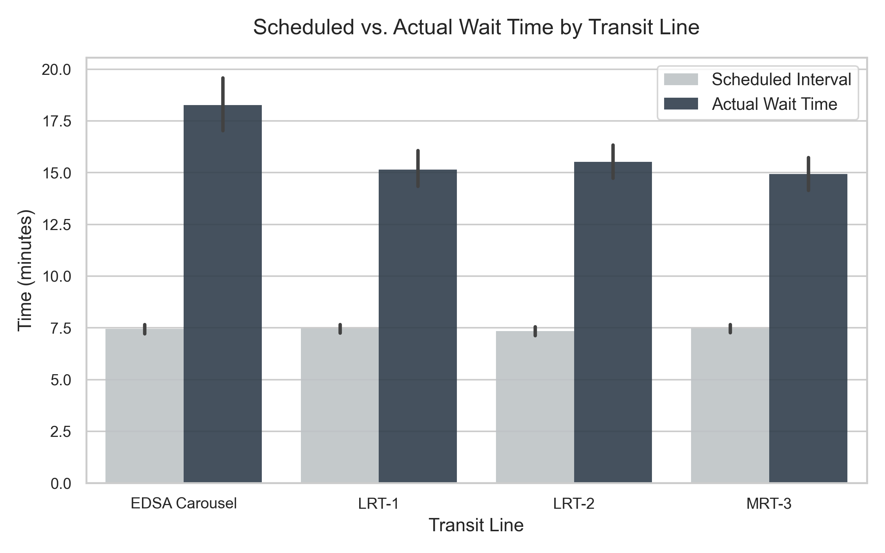

Research Overview
This analytics suite supports our investigation into Metro Manila's public transit performance. We compare the road-based EDSA Carousel against the train systems (MRT-3, LRT-1, LRT-2) under varying weather conditions and peak demand periods.
Core Research Questions Addressed:
- RQ1: Overall performance and scheduled vs. actual wait time.
- RQ2: Relative delay impacts during peak commuter rush.
- RQ3: Climate vulnerability and intermodal resilience under heavy rainfall.
- RQ4: Spatial bottlenecks and worst-performing station stops.
Key Insights
Total Trips Tracked
-
Max Avg Line Delay
10.8m
EDSA Carousel
Rain Delay Surge
+88%
Road-based Transit
Climate Resilient Mode
Rail
MRT/LRT Systems
Interactive Visualization Explorer

Key Takeaways for the Manuscript
The Rain-Resiliency Gap
Train lines are highly insulated from weather disruptions (wait times increase by only 4% to 20%). The EDSA Carousel busway experiences an 88% delay surge in heavy rain, demonstrating the critical need for segregated, flood-free bus corridors.
Peak Hour Saturation
Despite rail resiliency to rain, train systems experience a 115% to 120% delay ratio increase during peak hours, suggesting infrastructure saturation compared to the EDSA Carousel's 85% peak hour surge.